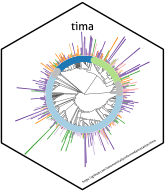

Prepare libraries of structure organism pairs HMDB
Source:R/prepare_libraries_sop_hmdb.R
prepare_libraries_sop_hmdb.RdThis function prepares the HMDB structure-organism pairs
Usage
prepare_libraries_sop_hmdb(
input = get_params(step = "prepare_libraries_sop_hmdb")$files$libraries$sop$raw$hmdb,
output = get_params(step =
"prepare_libraries_sop_hmdb")$files$libraries$sop$prepared$hmdb
)Examples
if (FALSE) { # \dontrun{
copy_backbone()
go_to_cache()
prepare_libraries_sop_hmdb()
unlink("data", recursive = TRUE)
} # }